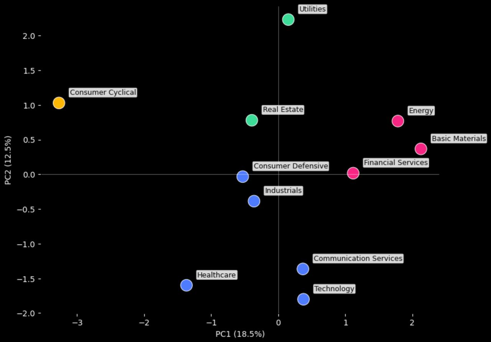
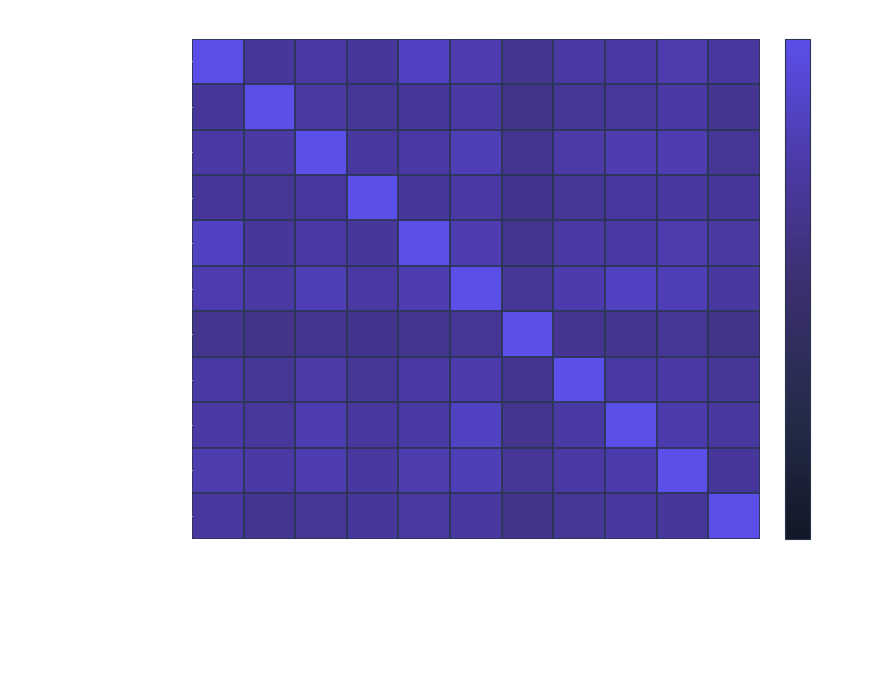
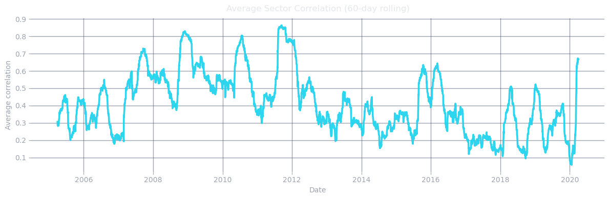
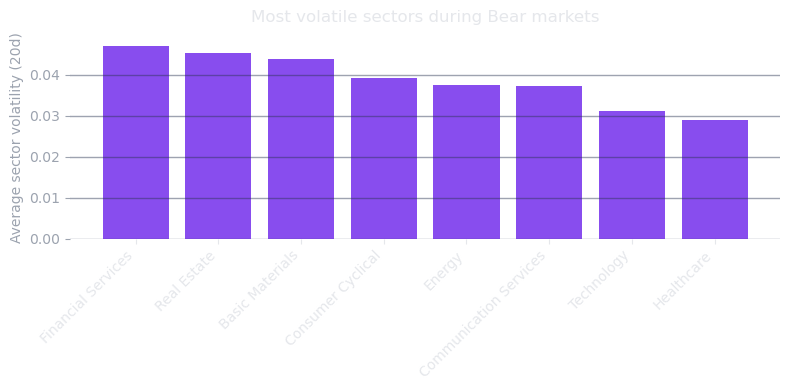
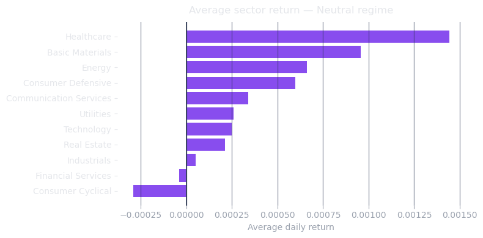
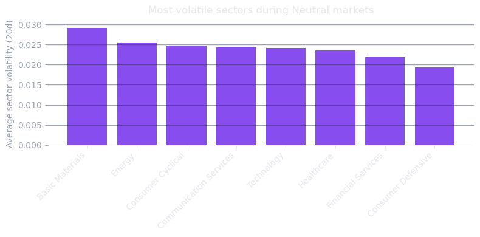
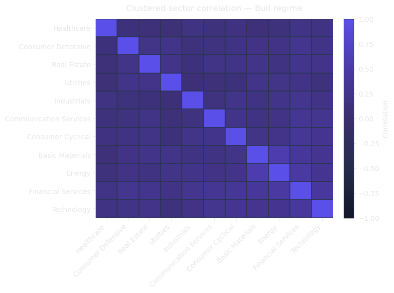
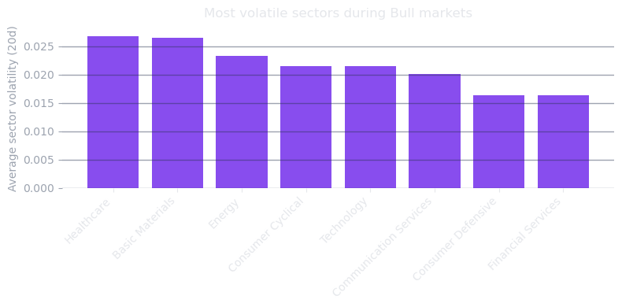
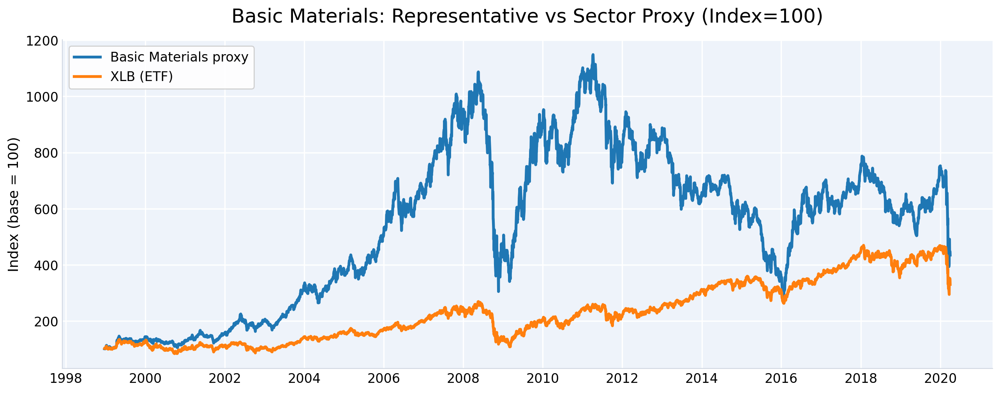

Understanding Investing, Made Practical
Stop guessing. Discover which market features truly drive returns and risk.
We turn raw market behavior into a decision toolkit: diversification of sectors → influence of regimes → market categories → ETF vs DIY → representative stocks → a final strategy picker.
One chart may look simple,
Until you ask what lies beneath.

Motivation
Financial markets are often explained with narratives, intuition, or isolated indicators, yet investors ultimately face a structural question: What truly drives returns and risk? We are motivated by the need to move beyond guesswork and systematically identify the market features that shape performance. By analyzing sectors, volatility, correlations, and market regimes extracted from real data, we aim to reveal how risk and return reorganize across different market conditions. Rather than predicting prices, the goal is to provide an interpretable framework that helps investors understand when certain exposures perform well, when diversification breaks down, and how market structure evolves over time.
The investor problem
Investors face a market driven by multiple interacting forces, yet decisions are often made by focusing on a single dimension at a time. Sectors, volatility, correlations, and market conditions are typically analyzed in isolation, making it difficult to understand what truly matters for returns and risk.
Our promise
We offer a feature-driven view of the market. By jointly analyzing sectors, risk, correlations, and regimes, we identify the structural drivers of performance. The goal is not prediction, but clarity: helping investors understand which features shape outcomes and how their influence changes across market conditions.
Roadmap: 5 chapters
Chapters
Chapter 1: Sector Diversification
Instinctly, spreading investments across sectors can feel like the best move. A diversified portfolio is often seen as safer: even if one sector crashes, you won’t lose everything, because you haven’t put all your eggs in one basket. This is what most investors believe. In reality, however, you might simply be putting your eggs in different baskets tied together. Sector diversification can create a false sense of protection. Let's examine whether sector diversification truly reduces risk or merely leads to fake diversification that fails when it matters most.
Diversification sounds easy, but markets don’t stand still. We study sector relationships across long-term (1973-2020), medium-term (2000-2020), and recent market (2015-2020) periods to see whether diversification survives changing conditions.
We start by looking at sector return correlations to understand which sectors move together. This gives a first clue about diversification, but it’s only half the story. Sectors can move differently and still become risky at the same time. So we go one step further and analyze rolling volatility correlations, asking a more uncomfortable question: when markets get nervous, do sectors get nervous together? High volatility co-movement reveals hidden links and shared exposure to market stress—exactly when diversification is supposed to protect you.
Sector Diversifier Funnel
Instead of overwhelming you with heatmaps, we compress all this information into funnel plots below with thresholds. The funnel shows which sectors truly diversify across time. Check it out! and don't forget what both metrics show :
- Returns capture co-movement in performance
- Volatility captures shared risk during stress
Interpretation:
Healthcare, Industrials, Real Estate, and Utilities are consistent return-based diversifiers, as they exhibit low average correlations with other sectors across all three windows. This indicates that, in terms of returns, these sectors have historically moved more independently from the broader market and have therefore provided diversification benefits for investor's portfolios over time.
Consumer Cyclical qualifies as a mostly consistent diversifier, maintaining low correlations for two windows but it lost this property in the most recent 5-year window. This suggests that its diversification benefits have weakened in recent years.
In contrast, Basic Materials, Energy, Financial Services, and Technology never qualify as return-based diversifiers. Their consistently high correlations indicate strong co-movement with the market, implying limited diversification value despite apparent sectoral differences.
Big Picture View
The Sector Map (PCA)
So far we looked at how sectors move together on a pairwise basis. But markets don’t move in pairs. They move together.
Select Metric
Select Window

Return PCA Interpretation:
Utilities and Healthcare consistently appear separated from the main market cluster in PCA space, indicating return dynamics that differ from the core market-driven sectors. This structural separation suggests strong diversification potential. This is coherent with the tunnel graph.
Chapter 2: Influence Of The Regimes On the Sectors' Returns And Volatilities
Do sectors behave the same way in bull, neutral, and bear markets — or does the regime reshape everything?
Sector analysis in isolation assumes that the market environment is stable, yet in practice market conditions evolve continuously. To capture these shifts, we define market regimes using the S&P 500 (SPY) as a proxy for overall market behavior, classifying each period into Bear, Neutral, or Bull regimes.
This framework allows sector returns, volatility, and correlations to be analyzed conditionally on the prevailing market environment rather than in aggregate. The results show that the same sectors can exhibit very different risk–return profiles depending on the regime, highlighting that diversification and sector attractiveness are not static properties but depend strongly on broader market conditions.
For an investor, this means there is no universally “best” sector: performance and risk shift with the market regime, making regime awareness essential for dynamic allocation and risk management.
Explore by regime



Sector behavior varies over time, with noticeable changes in both co-movement and risk. Periods of stronger alignment between sectors alternate with phases where diversification is more effective. At the same time, overall sector volatility shifts across market environments, with some regimes exhibiting consistently higher risk than others. These patterns suggest that both returns and volatility respond differently depending on the prevailing market regime



In bear markets, performance is highly dispersed across sectors: Consumer Cyclical and Communication Services deliver the strongest returns, while Defensive sectors are the only ones clearly negative. Volatility is elevated and concentrated in Financials, Real Estate, and Cyclicals, whereas Healthcare combines positive returns with comparatively low risk. Correlations are strong across most sectors, forming a tightly linked high-risk cluster, with defensives remaining only partially insulated.



In neutral markets, returns are more balanced, with Healthcare clearly leading, followed by Basic Materials and Energy, while Consumer Cyclical is the only sector with negative performance. Volatility is lower than in bear markets and favors Healthcare and Consumer Defensive, which combine solid returns with low risk. Correlations remain broadly positive, but cyclical sectors form a tighter core, leaving defensive sectors slightly more detached and structurally more stable.



In bull markets, all sectors post positive returns, with Healthcare clearly leading, followed by Technology and Communication Services. Volatility is generally lower and more evenly spread, though Healthcare and Basic Materials remain among the most volatile, while Technology offers a more balanced return–risk profile. Correlations are high across sectors, with cyclical and growth sectors forming a tight expansion cluster, indicating that performance is largely driven by broad market strength rather than isolated sector effects.
Chapter 3: Market Categories Inside Sectors
Within a sector, does choosing the market category really change risk and return?
Market categories describe how stocks are grouped within a given sector, based either on firm characteristics or on style-related signals. In this chapter, we focus on three commonly used categories: Growth, Quality, and Size. Growth and Quality represent style dimensions: Growth stocks are firms whose revenues or earnings are expected to expand faster than the sector average, often accompanied by higher valuation sensitivity and volatility, while Quality stocks are characterized by stronger balance sheets, more stable profitability, and lower financial risk. Size, by contrast, is a direct firm characteristic rather than a style preference, typically reflecting market capitalization and capturing differences in liquidity, risk exposure, and sensitivity to macroeconomic conditions. These categories are frequently discussed as “drivers” of performance, yet they interact strongly with sector structure. The purpose of this chapter is therefore not to assess whether Growth, Quality, or Size outperform in absolute terms, but to examine whether market-category distinctions still produce meaningful risk–return differences once the sector is fixed, and whether those differences remain stable over time.
Static comparisons can be misleading for investors because they average very different market environments into a single number. What matters in practice is how risk and return evolve through time, especially when conditions change. The following visualization tracks market categories inside sectors as they move through a return–volatility space. When categories cluster together, they offer similar risk–return trade-offs; when they separate, category choices become meaningful. More importantly, this view shows when category distinctions break down, such as during periods of market stress, and when they re-emerge in calmer phases. The goal is not to label a “best” category, but to understand when category tilts are likely to help — and when they are unlikely to matter at all.
Chapter 4: ETF vs DIY Basket
Should you buy the sector ETF, or recreate exposure yourself?
This section compares a sector ETF (e.g., XLK) with a DIY sector proxy (“basket”) built from the sector’s underlying stocks using a volume-weighted construction. The goal is to check whether the ETF delivers exposure that is similar to what you would get from a transparent, rules-based basket, and to see how their risk evolves through time.
For this sector:
Loading…
Choose a sector



Chapter 5 — Sector Proxy vs Stock Representativeness
Within each sector, which single stock or small basket best stands in for the whole? We balance representativeness with stability so the proxy works beyond short windows.
This chapter addresses a practical portfolio question: if you want sector exposure, is a single representative stock sufficient, or is a small basket needed to control idiosyncratic risk? Using the Chapter 2 pipeline, we construct sector proxies, filter illiquid stocks, score representativeness via rolling correlations, and validate candidates using tracking error.
We first examine sector structure. Stocks are embedded using pairwise-overlap correlations and clustered to assess whether sector dynamics are dominated by a common factor or split across multiple subgroups. Strong structural cohesion suggests simplification may be feasible, while fragmented sectors signal a need for diversification.
Representativeness is then evaluated dynamically. Stocks are ranked by their persistent alignment with the sector proxy over time, with lifetime and liquidity constraints ensuring robustness and investability. For each sector, we select both a single representative and a Top-5 basket.
Comparing normalized indices shows that some sectors, such as Energy, can be accurately represented by a single stock, while others benefit materially from a small basket, which improves stability and reduces drift relative to the proxy.
Tracking error provides the final validation. Where sector simplification works, single-stock and basket tracking error are similar; where it fails, diversification meaningfully reduces risk. The key takeaway is conditional simplification: some sectors can be owned through one name, but many require a small basket because the data—not theory—demands it.
Choose a sector
Technology
In the UMAP, the sector splits into 2 clusters over 325 stocks. The structure is extremely concentrated: the largest cluster (Cluster 1 (316 stocks)) contains 316 stocks, i.e. 97.2% of the sector.
On the index comparison, the single representative (HPQ) reaches a return correlation to the proxy of 0.612 with an annualized tracking error of 0.328. The basket ((HPQ, IBM, INTC, AAPL, TER)) increases correlation to 0.802 and reduces annualized tracking error to 0.228.
The rolling TE (60d) confirms this: the single has a p95 TE of 0.033 (max 0.078), while the basket has a p95 TE of 0.023 (max 0.059).
The tracking error confirms that a single stock cannot stably represent the sector: deviations remain large and persistent relative to the proxy. A small basket significantly reduces normalized tracking error, indicating that Technology is diversified internally and requires intra-sector diversification to capture its aggregate behavior.
Interactive Strategy Picker
Choose your profile, regime assumption, and preferred instrument: ETFs vs sector baskets vs market category. Instantly see expected returns and volatility.
Controls
This is the “product” moment: the site becomes a decision tool.